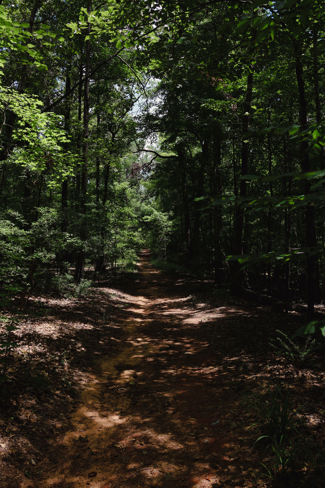

Our Story & Coastal Sanctuary
Founded in 2012 by a collective of conservationists, outdoor educators, and hospitality artisans, Pacific Trails Resort was born from a simple vision: to offer a restorative sanctuary where guests can reconnect with the raw majesty of the California North Coast without sacrificing modern comfort. Tucked between ancient redwood groves and dramatic ocean bluffs, our retreat spans over 40 acres of protected coastal wilderness. Every yurt, trail marker, and communal lodge space was thoughtfully designed to tread lightly on the land while immersing visitors in the sights and sounds of the Pacific.
Mindful Retreats & Guided Exploration
At the heart of the Pacific Trails Resort experience is our commitment to active renewal and environmental stewardship. Whether you are embarking on a sunrise trek through fern-lined forest footpaths or pausing along the bluffs to watch migrating gray whales, our wilderness trails cater to both seasoned hikers and first-time explorers.
Our resident naturalists lead daily excursions that highlight native coastal flora, tide pool ecosystems, and sustainable outdoor practices. After a full day on the trails, guests gather around our ocean-view fire pits to enjoy locally sourced organic cuisine and unwind under an unspoiled canopy of stars. We believe that true luxury lies in simplicity, quietude, and an authentic connection to the natural world.

Pacific Trails Resort
12010 Pacific Trails Road
Zephyr, CA 95555
888-555-5555